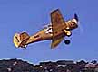
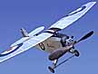
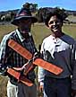
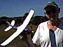
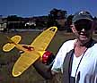
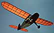
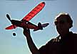

Outdoors with the Marin Aero Club
Here are a few more pix from our outdoor sessions. They were taken with a barely adequate camera and so have been relegated to this page.
Click any image for a larger view and notes.
| Jerry Long's T-6 Texan | George Benson's Helio Courier... | ... and Blackburn Airedale | Omi Chandiramani tries George's Island Flyer |
|---|---|---|---|
|  | 
|  |  |
|  |  |  |  |
|---|---|---|---|
| Jerry Long's winning Air Hog | Jerry's Cessna CR-3 racer | Gale Wagner's Monocoupesque | ...& Iron Horse |
Copyright 1998-99, Thayer Syme. All rights reserved